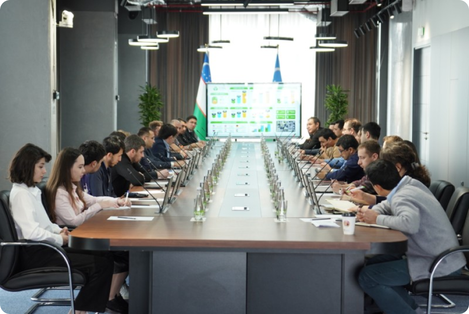

IT Parkʼda eksportga yo‘naltirilgan IT-kompaniyalar bilan uchrashuv bo‘lib o‘tdi
24-fevral kuni IT Park Toshkent filialida IT Park direktori Farhod Ibragimov va tashkilotning rezident-eksportyor kompaniyalari oʻrtasida uchrashuv bo‘lib o‘tdi. Tadbirning maqsadi – IT va BPO xizmatlari eksportining joriy holatini va O‘zbekistonda IT eksportini oshirish choralarini muhokama qilishdan iborat. Uchrashuv davomida Farhod Zairovich eksportning joriy holatiga oid ayrim statistik ma’lumotlar bilan boʻlishdi. Shunday qilib, oʻtgan yilgi maʼlumotlarga koʻra, IT-xizmatlar eksporti hajmi $140 millionni tashkil etdi, eksportning qariyb 48 foizi dasturiy taʼminotni yaratuvchi kompaniyalariga toʻgʻri keladi, 44 foizdan biroz koʻprogʻi esa biznes jarayonlari autsorsingi bilan shugʻullanuvchi kompaniyalarga toʻgʻri keladi. Bundan tashqari, eksportning 80% dan ziyodi AQSh bozoriga toʻgʻri keladi, ammo boshqa koʻplab potensial bozorlar, jumladan Yevropa, Kanada va Sharq mamlakatlari mavjud. “Afsuski, eksportning asosiy qismi Toshkentdan amalga oshiriladi, demak, biz boshqa hududlardan ham eksportni yanada oshirishga e’tibor qaratishimiz kerak. Barchangizga ma’lumki, Prezident bizga IT-xizmatlar eksportini 300 million dollargacha oshirish vazifasini qo‘ydi. Ishonchim komilki, birgalikdagi sa’y-harakatlarimiz va bilimlarimiz bilan eksportni oshirish bo‘yicha samarali strategiyalarni ishlab chiqa olamiz va Oʻzbekistonda IT sohasi rivojiga oʻz hissamizni qoʻsha olamiz”, – dedi IT Park direktori.
Hozirda IT Park Uzbekistan xalqaro moliya markazi hamda kompaniyalarga yangi mahsulot va xizmatlarni nazorat qilinadigan muhitda testdan o‘tkazish imkonini beruvchi tartibga soluvchi sandbox yaratish ustida ishlamoqda. Bu xorijiy kompaniyalar uchun qulaylik va xavfsizlik darajasini taʼminlaydigan shartnomalar va kelishuvlar uchun ingliz huquqidan foydalanish imkoniyatini oʻz ichiga oladi. Tashkilot, shuningdek, rezident eksport qiluvchi kompaniyalar uchun maxsus raqamli bankni ishlab chiqish jarayonida. U ularning ehtiyojlariga moslashtirilgan bir qator moliyaviy xizmatlarni, shu jumladan, xorijiy valyutasidagi hisoblar va raqamli toʻlov tizimlarini taklif qiladi. Asosiy qism yakunida savol-javoblar sessiyasi boshlandi. Ayrim rezident kompaniyalar vakillari eksportdagi muvaffaqiyatlari bilan boʻlishdilar, shuningdek, birgalikdagi sa’y-harakatlar bilan qo‘yilgan vazifaga qanday erishish mumkinligi bo‘yicha takliflar bilan almashdilar. Bundan tashqari, kompaniyalar duch kelgan toʻsiqlar haqida gapirdilar. Xususan, relokatsiya paytidagi uy-joy muammosi va uy-joy narxining oshishi haqida soʻz yuritildi. Takliflar qatorida bojxona rasmiylashtiruvi uchun imtiyozlar va xorijiy mamlakatlarga IT sohasidagi rasmiy tashriflarda ishtirok etish so‘rovi bildirildi.

#hi_tech_#IT_PARK